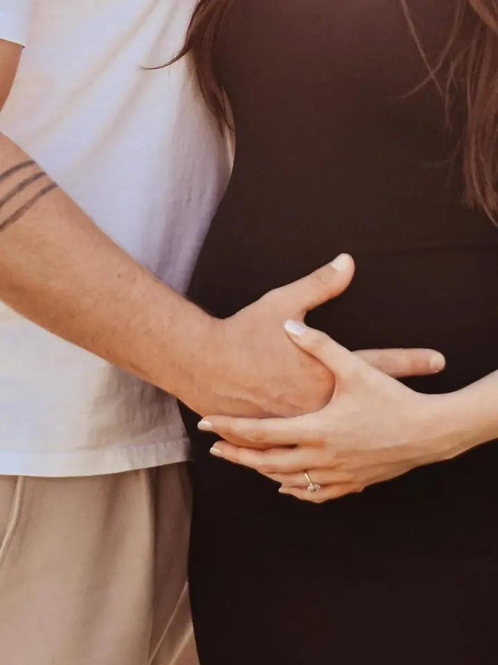

Portrétní focení jednotlivce
Focení jen pro vás, ve světlém interiéru nebo venku v polích a při západu slunce. Nejčastěji fotím ženy a jde mi o to, abyste se na fotkách poznala.




Jmenuji se Bea a fotím pod značkou Bea za foťákem. Nejradši fotím ženy, nastávající maminky a páry, ve světlém interiéru i venku v podvečerním světle. Najdete mě v Uherském Hradišti, v Horním Němčí a ve Zlíně.
Více o mně„Stačí přijít a být sami sebou.“
— Bea Valková
Focení jen pro vás, ve světlém interiéru nebo venku v polích a při západu slunce. Nejčastěji fotím ženy a jde mi o to, abyste se na fotkách poznala.
Klidné focení bříška, samotné maminky nebo s partnerem. Hodně se dívám na doteky a malé detaily.
Focení pro dva, bez strojených póz. Stačí být spolu a chvíli zapomenout, že je u toho foťák.
Společné fotky celé rodiny, venku nebo v interiéru. Termín si vyberete rovnou v rezervačním systému.
Jsem Bea a stojím za foťákem, odtud i název Bea za foťákem. Fotím portréty jednotlivců, těhotenské, párové a rodinné focení na Uherskohradišťsku a ve Zlíně.
Mám ráda dva světy. Čistý bílý interiér s velkými okny, kde vynikne každý pohyb a výraz, a venkovní focení v polích a na loukách, když slunce zapadá a všechno zezlátne.
Hodně fotím ženy a záleží mi na tom, aby se na fotkách cítily samy sebou. Žádné složité pózování, spíš klid, čas a pár drobných pokynů. Volný termín si můžete vybrat a zarezervovat rovnou online.

Na mém rezervačním webu vidíte volné termíny a druh focení si zarezervujete sami, nebo mi napíšete e-mail.
Probereme, jestli budeme fotit v interiéru nebo venku, co si vzít na sebe a jakou atmosféru chcete.
Fotíme v klidu a bez spěchu. Povedu vás, ale nechám prostor, abyste byli sami sebou.
Fotky pečlivě vyberu a upravím v jednotném jemném stylu a pošlu vám je online.
Nejjednodušeji přes můj rezervační systém Reservio, kde vidíte volné termíny. Kdykoliv mi můžete napsat i na beazafotakem@gmail.com.
Fotím v Uherském Hradišti, v Horním Němčí a ve Zlíně. Podle toho, co si vyberete, fotíme ve světlém interiéru nebo venku v přírodě.
Aktuální ceník najdete u jednotlivých služeb v rezervačním systému a na mém Instagramu. Když si nebudete jistí, ráda vám poradím.
Mám i službu Focení jiné. Napište mi, co máte v plánu, a domluvíme se, jak to udělat.
beazafotakem@gmail.com
Uherské Hradiště · Horní Němčí · Zlín